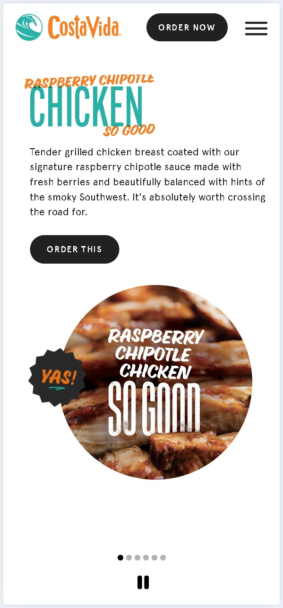
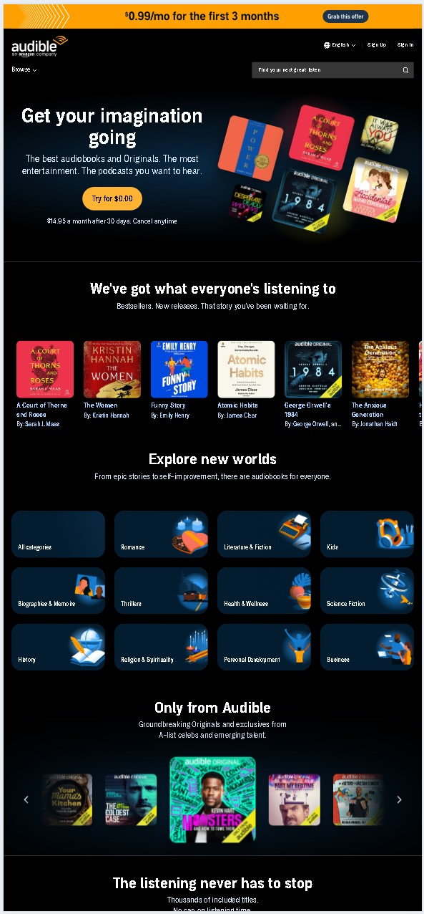

White Space and Clean Design
Costa Vida
costavida.com

Costa Vida's homepage uses white space and clean design well. The white space helps the page feel uncluttered. Each element stands out in a way that is easy to understand. The pops of color, the order buttons, and the image look appealing against the white background.
PARC: Contrast
Hulu
hulu.com
Hulu uses contrast to make their homepage pop. The dark background makes their signature green color stand out. The green buttons really pop, encouraging users to click and sign up. The white text is also easy to read against the background.
PARC: Repetition
Audible
audible.com

Audible's homepage divides sections by using repetition. The repetition makes it easy to evaluate each section quickly. The bestsellers and new releases are displayed in a row, with repeating image and text elements. The next section highlights different categories to explore. The category icons are displayed in a grid, with repeating text, icon, shape, and background elements.